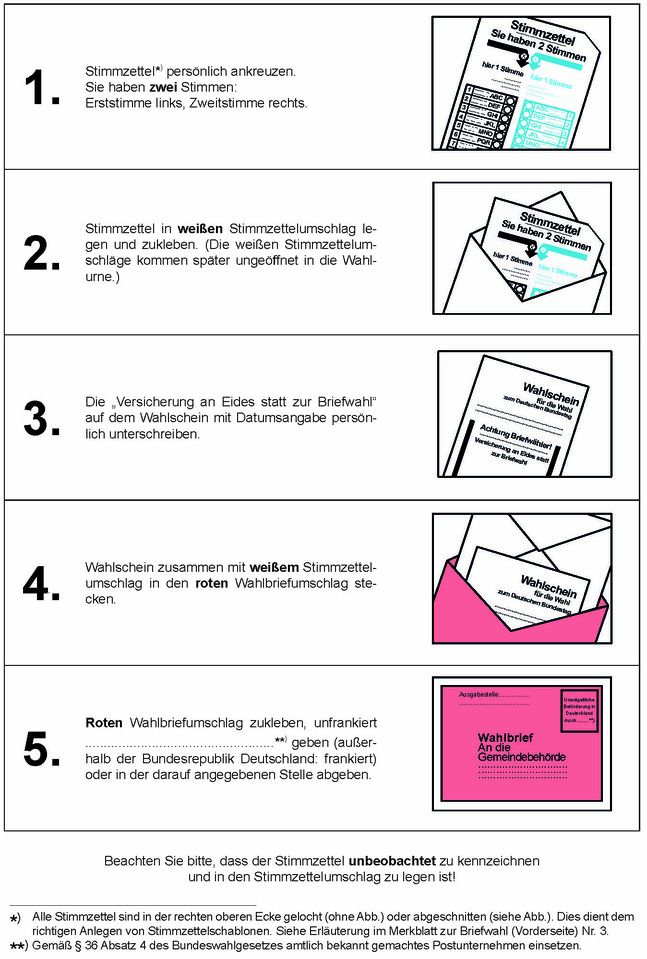

(Fundstelle: BGBl. 2024 I Nr. 283, S. 21 – 22)
Vorderseite des Merkblatts zur Briefwahl
Sehr geehrte Wählerin!
Sehr geehrter Wähler!
Anbei erhalten Sie die Unterlagen für die Wahl zum ……………………………… Deutschen Bundestag in dem auf dem Wahlschein bezeichneten Wahlkreis:
| 1. | den Wahlschein, | 3. | den amtlichen weißen Stimmzettelumschlag, |
| 2. | den amtlichen weißen Stimmzettel, | 4. | den amtlichen roten Wahlbriefumschlag. |
Sie können an der Wahl teilnehmen
- 1.
gegen Abgabe des Wahlscheines und unter Vorlage eines amtlichen Personalausweises oder Reisepasses durch Stimmabgabe im Wahlraum in einem beliebigen Wahlbezirk des auf dem Wahlschein bezeichneten Wahlkreises
oder
- 2.
gegen Einsendung des Wahlscheines an die für Sie zuständige, auf dem Wahlbriefumschlag angegebene Stelle des auf dem Wahlschein bezeichneten Wahlkreises durch Briefwahl.
Nach § 14 Absatz 4 des Bundeswahlgesetzes darf jeder Wahlberechtigte sein Wahlrecht nur einmal und nur persönlich ausüben. Wer unbefugt wählt oder sonst ein unrichtiges Ergebnis einer Wahl herbeiführt oder das Ergebnis verfälscht oder eine solche Tat versucht, wird nach § 107a Absatz 1 und 3 des Strafgesetzbuches mit Freiheitsstrafe bis zu 5 Jahren oder mit Geldstrafe bestraft.
Bitte nachstehende „Wichtige Hinweise für Briefwähler“ und umseitigen „Wegweiser für die Briefwahl“ genau beachten.
Wichtige Hinweise für Briefwähler:- 1.
Die Stimmabgabe bei der Briefwahl ist nur gültig, wenn in der unteren Hälfte des Wahlscheines die „Versicherung an Eides statt zur Briefwahl“ mit der Unterschrift versehen ist.
- 2.
Den Wahlschein nicht in den weißen Stimmzettelumschlag legen, sondern mit diesem in den roten Wahlbriefumschlag stecken. Sonst ist die Stimmabgabe ungültig.
- 3.
Wähler, die des Lesens unkundig oder wegen einer Behinderung gehindert sind, den Stimmzettel zu kennzeichnen, können sich der Hilfe einer anderen Person bedienen. Die Hilfsperson muss das 16. Lebensjahr vollendet haben. Sie hat die „Versicherung an Eides statt zur Briefwahl“ zu unterzeichnen. Die Hilfeleistung ist auf technische Hilfe bei der Kundgabe einer vom Wahlberechtigten selbst getroffenen und geäußerten Wahlentscheidung beschränkt. Unzulässig ist eine Hilfeleistung, die unter missbräuchlicher Einflussnahme erfolgt, die selbstbestimmte Willensbildung oder Entscheidung des Wahlberechtigten ersetzt oder verändert oder wenn ein Interessenkonflikt der Hilfsperson besteht. Die Hilfsperson ist zur Geheimhaltung der Kenntnisse verpflichtet, die sie bei der Hilfeleistung von der Wahl einer anderen Person erlangt hat. Auf die Strafbarkeit einer im Rahmen zulässiger Assistenz entgegen der Wahlentscheidung des Wahlberechtigten oder ohne eine geäußerte Wahlentscheidung des Wahlberechtigten erfolgten Stimmabgabe wird hingewiesen.
Ein blinder oder sehbehinderter Wähler kann sich zur Kennzeichnung des Stimmzettels einer Stimmzettelschablone bedienen, die von den Blindenverbänden kostenlos zur Verfügung gestellt wird. Zur Verwendung von Stimmzettelschablonen ist die rechte obere Ecke aller Stimmzettel gelocht oder abgeschnitten. Dies dient dem richtigen Anlegen der Stimmzettelschablonen. Auskünfte zu Stimmzettelschablonen erhalten Sie unter der Telefonnummer ……………………………… .
- 4.
Wahlbrief unter Berücksichtigung der Postlaufzeiten so rechtzeitig versenden, dass er spätestens am Wahltag bis 18.00 Uhr bei dem auf dem Wahlbrief angegebenen Empfänger eingeht! Der Wahlbrief kann auch dort abgegeben werden.
Die Versendung durch ………………………………
*) innerhalb der Bundesrepublik Deutschland ist unentgeltlich. Wird eine besondere Beförderungsform gewünscht, so muss das dafür fällige – zusätzliche – Leistungsentgelt entrichtet werden.
Bei Beförderung durch ein anderes Postunternehmen ist das dafür fällige Leistungsentgelt in voller Höhe zu entrichten; ansonsten kann eine ordnungsgemäße Beförderung nicht gewährleistet werden.
Außerhalb der Bundesrepublik Deutschland sollte der Wahlbrief möglichst bald und am Schalter eines Postamtes eingeliefert sowie Luftpostbeförderung verlangt werden. Der Wahlbrief ist als Briefsendung des internationalen Postdienstes grundsätzlich vollständig freizumachen. Deshalb muss für den Wahlbrief das im Einlieferungsland zu entrichtende Entgelt gezahlt werden. Auf dem Wahlbrief unterhalb der Anschrift das Bestimmungsland „ALLEMAGNE“ oder „GERMANY“ angeben. Falls ein Wahlberechtigter Bedenken hat, den Wahlbrief wegen seiner Kennzeichnung und der roten Farbe durch die Post im Ausland befördern zu lassen, ist es ihm überlassen, den Wahlbrief in einen neutralen Briefumschlag zu stecken und diesen bei der Post abzugeben.
- 5.
Wahlbriefe, die am Wahltag nach 18.00 Uhr bei der zuständigen Stelle eingehen, werden nicht mehr berücksichtigt.
__________
- Gemäß § 36 Absatz 4 des Bundeswahlgesetzes amtlich bekannt gemachtes Postunternehmen einsetzen.
noch Anlage 12
(zu § 28 Absatz 3)
Rückseite des Merkblatts zur Briefwahl
Wegweiser für die Briefwahl
